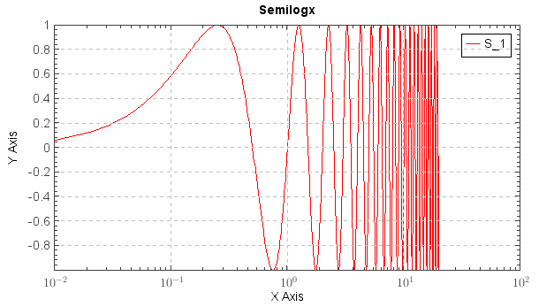

semilogx¶
-
mipylib.plotlib.miplot.semilogx(*args, **kwargs)¶ Make a plot with log scaling on x axis.
- Parameters
x – (array_like) Input x data.
y – (array_like) Input y data.
style – (string) Line style for plot.
- Returns
Legend breaks of the lines.
Examples:
t = arange(0.01, 20.0, 0.01) semilogx(t, sin(2*pi*t)) grid(True) ylabel('Y Axis') xlabel('X Axis') legend() set(plt.gca, xminortick=True, yminortick=True) title('Semilogx')